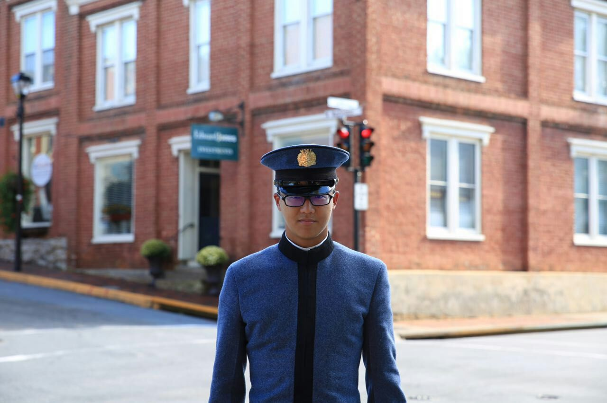

3-314 room member: Xilin Cheng

- Xilin Cheng is an international VMI cadet from China. People always asked him question about how did you hear about VMI and why do you choose to come here. He said he has been a WWII fan since very young and there was a very famous Chinese General who defeated and killed most Japanese graduated from VMI. That was how he know about VMI.
- When he decided to study in America for undergraduate degree, he applied nine universities first, including University of California in San Diego, Irvine, Santa Barbara, University of Wisconsin and Minnesota etc. However, when he heard that his teacher accidentally brought up that VMI accepts international student, he put it on his list with no hesitate. Due to the documents record, Xilin had no idea what he is about to get in to. He did not know Ratline, Hell Week, or any of the aspect of being a cadet in VMI. But he did know it will not be easy. When he saw the motor: no ordinary college, no ordinary life. He knew this was what he wanted, whatever, it comed to him, he would take them all.